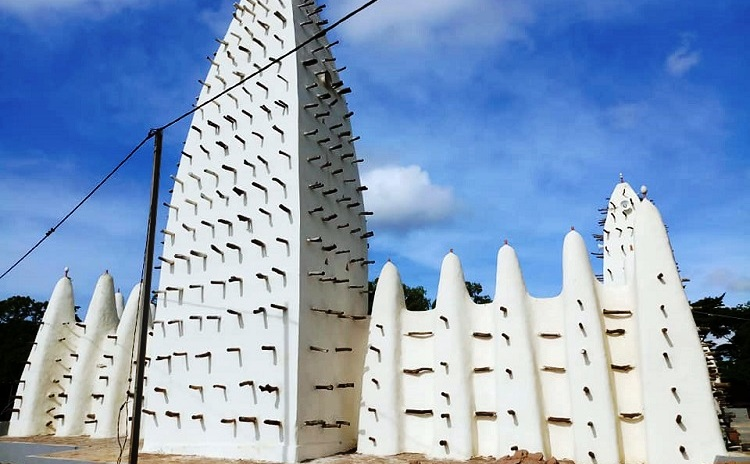

Historique de la grande mosquée de Dioulassoba
La grande mosquée de Dioulassoba a été construite en 1880 par L’Almani Sidiki SANOU. Samory Touré y aurait prié lors de son passage à Bobo-Dioulasso avant de poursuivre son combat contre les colons. Les visites se font dans la matinée uniquement. Le ministre chargé de la culture et du tourisme, sur la directive de l’ancien ministre Tahirou BARRY a procédé à sa réhabilitation grâce à une souscription volontaire. Ce programme s’etend de 2016 à 2019 et représentait un montant de 500 millions de CFA ces dernières années. Le minaret de la mosquée, essentiellement en bois de chauffe, s’est totalement effondré du 6 au 13 aout 2021. À la suite de cet incident, les habitants de la ville s’interrogent sur l’efficacité du programme de réhabilitation
Description de la grande mosquée de Dioulassoba
La mosquée de Dioulassoba se situe au centre de la ville de Bobo-Dioulasso, en face du quartier Kibédoué et de l’Hôtel de ville. Son accès est facile. Elle est construite en banco dans un style soudanais. Grande pièce montée de couleur beige, l’édifice qui a été construite par l’Almany Sidiki SANOU ressemble a une structure moderne. Ses minarets hérissés de piquets ainsi que les contreforts de ses murs ont été modelés dans la latérite, et leurs bâtisseurs leur ont donné la forme d’obus ou de pains de sucre. A deux pas de la mosquée, on a les vieux quartiers de kibidoué et de sya, et leur maison en terre.